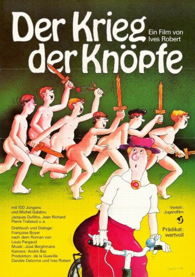

#3365 Der Krieg der Knöpfe
Alternativ: War of the Buttons (Englischer Titel)
 
 IMDB-Wertung: 7.5 / 10
IMDB-Wertung: 7.5 / 10  Metascore: 0
Metascore: 0 
Literaturverfilmung nach dem gleichnamigen Roman von Louis Pergaud (1912). Zwei Jungenbanden aus zwei verschiedenen französischen Dörfern bekämpfen sich. Den Verlierern werden alle Knöpfe abgeschnitten. Sehr zum Ärger der Eltern.
Jahr: 1962
Dauer: 93 Minuten
FSK: 6
Land: Frankreich Studio: Gloria Filmverleih AGTonspuren: DD1.0 - ,
Untertitel: Französisch, Deutsch, , Englisch, ,
Auflösung: 720p (1200x720) Größe: 3389 MB
Genre: Komödie
Regisseur: Yves Robert
Drehbuch: Louis Pergaud, François Boyer, Yves Robert
Soundtrack: José Berghmans
Darsteller:
 Paul Crauchet als Touegueule
Paul Crauchet als Touegueule- Jacques Dufilho als L'Aztec's father
- Yvette Etiévant als Lebrac's mother
 Michel Galabru als Bacaillé's father
Michel Galabru als Bacaillé's father- Michèle Méritz als L'Aztec's mother
- Jean Richard als Lebrac's father
 Pierre Tchernia als Bédouin
Pierre Tchernia als Bédouin- Pierre Trabaud als School teacher
- Claude Confortès als Nestor the postman
- Henri Labussière als A countryman
- Yves Peneau als Le préfet des études / The prefect
- Robert Rollis als Le père de 'Migue la Lune' / Migue la lune's father
- Louisette Rousseau als Bacaillé's mother
- Claude Bourseiller als
- Tsilla Chelton als
- Claude Meunier als Bacaillé
- Jean-Paul Queret als Bacaillé
- François Boyer als The priest , uncredited
- Marie-Catherine Faburel als Marie-Tintin , uncredited
- Michel Isella als L'Aztec , uncredited
- François Lartigue als Grand Gibus , uncredited
- Martin Lartigue als Petit Gibus , uncredited
- André Treton als Lebrac , uncredited
Datei: X:\1962\Krieg der Knöpfe, Der (1962, FSK6, 1200x720).mkv seit 26.03.2016
Festplatte: HD 1900-1970
 Es gibt insgesamt 23 Filme in der Gruppe '1962'
Es gibt insgesamt 23 Filme in der Gruppe '1962'